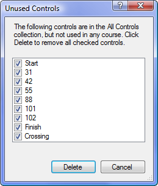

Event/Remove Unused Controls
This command lists all the controls in the All Controls collection that are not being used in any event. Once course design is complete, it is good practice to remove any unused controls.

When the dialog first appears, all the unused controls are checked. If you wish to keep some of the controls, uncheck any controls you do not wish to delete.
Click "Delete" to delete all the checked controls.
After the command completes, you can use Undo to get the deleted controls back.